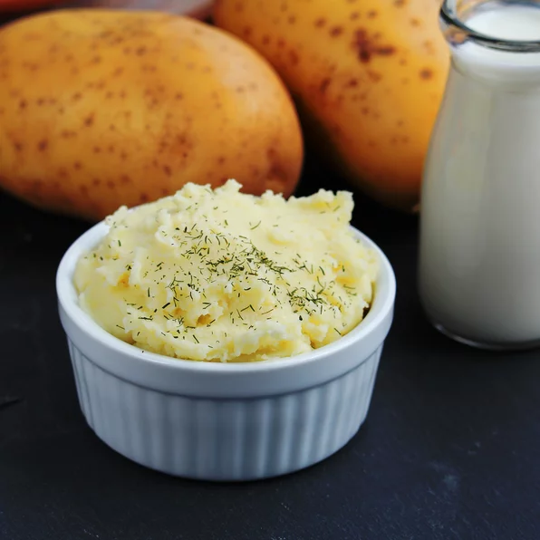

Basic Mashed Potatoes

Ingredients
- 2 pounds of baking potatoes, peeled and cut into quarters
- 2 tablespoons of butter
- 1 cup of milk
- salt and pepper to taste
Steps
- Bring a post of salted water to a boil. Add the potatoes and cook until tender but still firm, should be aobut 15 minutes, then drain.
- In a small saucepan, heat butter and milk over low heat until the butter is melted. Using a potato masher, slowly blend the milk mixture into the potatoes until they are smooth and creamy. Season with salt and pepper to your taste.